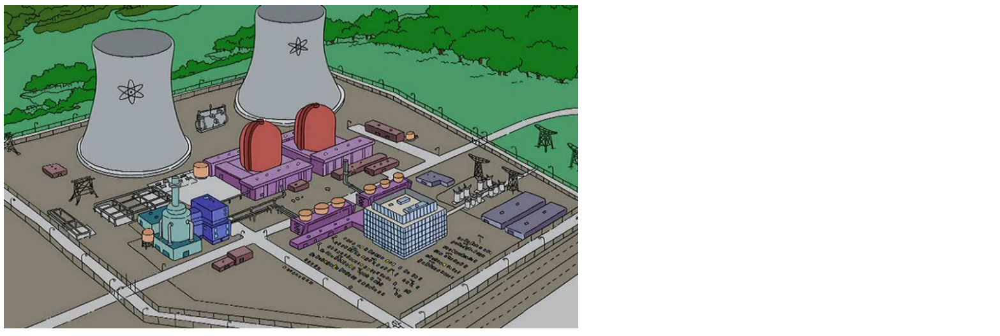

LAS FUENTES DE ENERGÍA Y SU TRANSPORTE
TIPO DE FUENTES DE ENERGÍA
La energía puede clasificarse según su fuente de origen en renovable y no renovable. Las energías renovables provienen de fuentes naturales inagotables o que pueden regenerarse en periodos cortos de tiempo, mientras que las no renovables son limitadas y se agotan con su uso.
Fuentes de Energía Renovable
- Energía Solar: Del sol en forma de radiación
- Energía Eólica: Es la energía cinética del viento.
- Energía Mareomotriz: Se genera con el movimiento de las mareas.
- Energía Hidráulica: Aprovecha el agua de embalses y ríos.
- Energía Geotérmica: Proviene del calor interno de la Tierra.
- Biomasa: Se obtiene de restos orgánicos y residuos urbanos.
Fuentes de Energía No Renovable
- Carbón: Mineral fósil usado como combustible en centrales térmicas.
- Petróleo: Mezcla de hidrocarburos líquidos con múltiples usos.
- Gas Natural: Compuesto por gases ligeros con alto poder energético.
- Energía Nuclear: Generada a partir de la fisión de los átomos.
TRANSPORTE DE ENERGÍA
El transporte y la distribución de la energía son esenciales para su disponibilidad en distintos sectores. Sin embargo, estos procesos pueden implicar riesgos, como accidentes durante el traslado o impacto ambiental por el uso de combustibles fósiles.
Formas de Transporte de Energía
- Carbón: Transportado por carretera y ferrocarril.
- Petróleo: Movilizado mediante oleoductos y buques petroleros.
- Gas Natural: Distribuido a través de gasoductos de alta presión.
- Energía Nuclear: Transmitida a larga distancia por redes eléctricas.
Impacto Ambiental
El transporte de energía tambien tiene consecuencias ambientales. El derrame de petróleo, las fugas de gas y la contaminación del aire por combustibles fósiles son algunos de los principales problemas. Es fundamental buscar soluciones más sostenibles para minimizar estos efectos.
Imagen Representativa
A continuación, se muestra una imagen relacionada con el transporte de energía:
